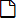

Modifica la password inserita in fase di avvio di cotodesign Template e cotodesign Order Viewer.
Per migliorare la sicurezza, modificare la password periodicamente.
Lista Template e Lista Print Layout |
Si tratta di elenchi di “Template” e “Print Layout” registrati in cotodesign.
Pulsanti nell’angolo superiore destro dello schermo

Modifica la password inserita in fase di avvio di cotodesign Template e cotodesign Order Viewer.
Per migliorare la sicurezza, modificare la password periodicamente.

Visualizza il file di supporto online.
LINGUA

Cambia la lingua del display.
Lista Template

Crea un nuovo modello.
• Articolo correlato >> Determinare la dimensione e il metodo di stampa di un modello

Modifica il template.

Importa un file SVG e aggiunge un nuovo template.
Per le specifiche dei file SVG, consultare la “Guida alle impostazioni cotodesign”.

Visualizza l’anteprima del template.
Le impostazioni non possono essere modificate.

Elimina il template.

Importa un file di template e lo carica sul server.

Salva il template selezionato.

Immettere una parte del nome di un template per filtrare i file dei template visualizzati nell’elenco.
NOME
Visualizza il nome del file del template registrato.
I nomi dei file dei template sono soggetti a regole di denominazione e indicano una configurazione degli strati separata da un punto.
TIPO DI STAMPA
Quando si stampa su una stampante, selezionare “Stampa a colori”. Quando si utilizza un decoratore laser, selezionare “Stampa Foil”. Quando si utilizza una stampante per metalli, selezionare “Stampa su metallo”. Se si utilizza una macchina da taglio, selezionare “Taglio”.
Fare clic su “▼” e selezionare “TIPO DI STAMPA” per filtrare i file del template visualizzati nell’elenco.
EFFETTO SPECIALE
Quando si usa “COLORE SPOT” per creare un file template, viene visualizzata un’icona corrispondente all’effetto speciale.
Lista Print Layout
Crea un nuovo layout di stampa.

Modifica le impostazioni del layout di stampa.

Importa un file SVG e aggiunge un nuovo layout di stampa.
Per le specifiche dei file SVG, consultare la “Guida alle impostazioni cotodesign”.

Visualizza l’anteprima del layout di stampa.
Le impostazioni non possono essere modificate.

Elimina il layout di stampa.

Importa un file di layout di stampa e lo carica sul server.

Salva il layout di stampa selezionato.
COLLEGA
Seleziona il layout di stampa in cui collocare il template.
Ciascun template richiede almeno un layout di stampa per la sua destinazione di collocazione. I template che non sono stati collocati in un layout di stampa non possono essere stampati.
Possono essere selezionati più layout di stampa per le destinazioni di collocazione di un singolo template. Tuttavia, template e layout di stampa possono essere combinati solo se hanno lo stesso tipo di stampa. Ad esempio, i template specifici per la stampa a colori possono essere associati solo a layout di stampa a colori. Usare cotodesign Print Manager per impostare i layout di stampa in cui collocare i template ordinati.
PREDEFINITO
Seleziona il layout di stampa in cui vengono automaticamente collocati i template quando viene selezionata la casella [Layout ordini automatico] in cotodesign Print Manager.
NOME
Visualizza il nome del file del layout di stampa.
TIPO DI STAMPA
Quando si stampa su una stampante, selezionare “Stampa a colori”. Quando si utilizza un decoratore laser, selezionare “Stampa Foil”. Quando si utilizza una stampante per metalli, selezionare “Stampa su metallo”. Se si utilizza una macchina da taglio, selezionare “Taglio”.
Fare clic su “▼” e selezionare “TIPO DI STAMPA” per filtrare i file visualizzati nell’elenco dei layout di stampa.
SALVA
Salva sul server le impostazioni per la destinazione di collocazione del template e del layout di stampa.
Copyright (C) 2018-2019 Roland DG Corporation